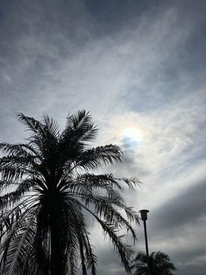
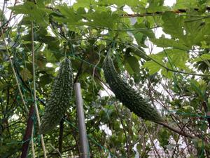

うるがいの話 ある日
最新: ゴーヤーの花の雌雄の見分け方【うるがいの話 ある日】とは 一日だけのプログです
『うるがいの話』の最新一日だけのプログで、通信料が少なく経済的だ。カニの画像をクリックすると全ての日付が載る『うるがいの話』サイトを表示します
|
|
【うるがいの話】 うるがい(ｳﾙｶﾞｲ urugai)とは、『もずくがに』の名前でとても大きくなります。 |
|---|---|
|
|
【カミマヤーの話】 猫のことを方言でマヤーといいます。カミマヤー（kamimayaa）とは、神の猫のことです。 |
|
【たながぁの音楽】 たながぁ（ﾀﾅｶﾞｰ tanagaa）とは手長えびのことで、何種類かあり大きいのは車 エビぐらいになります。 |

|
【ぶながぁの話】 ぶながぁ(ﾌﾞﾅｶﾞｰ bunagaa)とは、赤い髪の毛、赤い身体、そして身長は１ｍ２０ｃｍ ぐらい、川の蟹を食べているの目撃された。場所は沖縄県国頭郡大宜味村のと ある村僕の隣近所に住んでいる爺さんから、聞いた話です。 |
|
|
【ギーマの話】 ギーマ(giima)とは、山原の里山に咲くスズランに似た、 花を付けます。実は食べられます、 気が付くと口の周りが紫になっています。 |
2024年05月30日 (木）ゴーヤーの花の雌雄の見分け方
15:07

ん？、ヤンバル育ちだがよく分からない。善徳オバーが、カボチャやヘチマ
の雄花の花を摘み取って、雌花に花粉をくっつけて受粉させていたので知っ
ているのだが。ネットで調べた、なるほど、家に植えているゴヤーは実がな
かなか付けないので、受粉させるベと花を調べる（５～８ほどしかないが）
と全て雄花で、雌花が皆無だった（残念）。

ファーブルさんの本を読んでいると、挿し木の事が書いてある。小学生低学
年の頃、叔父さん（母親の兄）に従妹のカズミと一緒に、里山にある傾斜の
あるミカン畑に連れて行かされた。叔父さんは、そこいらに生えている木を
利用してシークワーサーの苗木を挿し木していた。やがて、私が中学生にな
るころには、かなり成長して冬になると沢山の実をつけた。まだ両親が健在
していたとき、ごく稀にそのミカン畑がある山道を散策したが、誰も手入れ
をしないのでジャングルになっていた。いつか、挿し木を経験してみたい。
カズミはアメリカ人と結婚し、カルフォルニアにいる（多分）。
明日は、雨の予報である。風呂場にカビがチラホラみえたので、カビキラー
で掃除する。臭いことを行うのは、私の役割ということがオキテである。
１５時００分 ビットコインの総資産 ￥３１、０１７（↑１９）